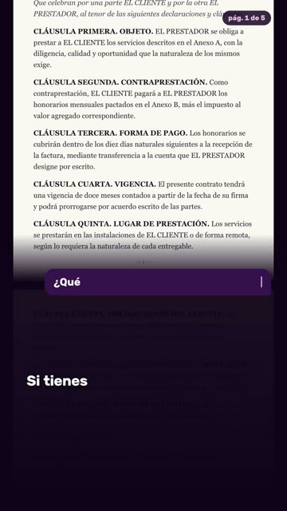
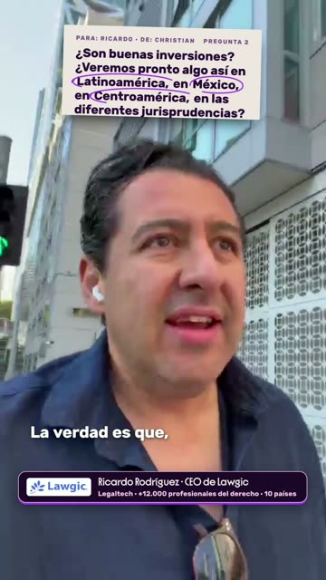
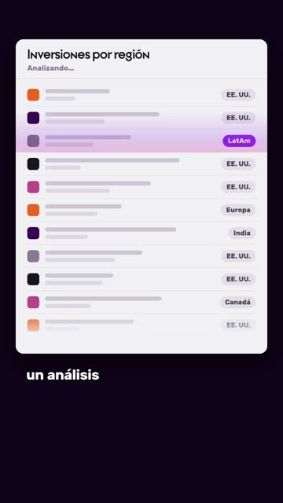

2026-10-cvander-preguntale-humano-ep01
21 escenas · 22 transiciones · concepto: Formatos de Christian + takeovers a pantalla completa. Las imágenes y clips salen del video final. El código vive en edicion/master/index.html.
Transiciones
Cada clip son 1,6 s alrededor del momento (en bucle). Cómo se hacen: cutT(t, f) = zoom con desenfoque sobre la toma justo en el corte (f=1 misma persona, f=1.6 cambio de persona); tkIn/tkOut = el gráfico a pantalla completa entra/sale con el mismo zoom con desenfoque. Plantilla: pipeline/docs/templates/transiciones-corte.js.
T01 · 24.10 s
cambio de persona
cambio de persona
cutT(24.1, 1.6)T02 · 30.10 s
corte dentro de la misma persona
corte dentro de la misma persona
cutT(30.1, 1)T03 · 36.87 s
corte dentro de la misma persona
corte dentro de la misma persona
cutT(36.867, 1)T04 · 37.01 s
entra el takeover #tk1
entra el takeover #tk1
tkIn('#tk1', 37.01) · línea 478T05 · 44.36 s
sale el takeover #tk1
sale el takeover #tk1
tkOut('#tk1', 44.36) · línea 503T06 · 50.03 s
corte dentro de la misma persona
corte dentro de la misma persona
cutT(50.033, 1)T07 · 52.37 s
corte dentro de la misma persona
corte dentro de la misma persona
cutT(52.367, 1)T08 · 56.45 s
entra el takeover #tk2
entra el takeover #tk2
tkIn('#tk2', 56.45) · línea 509T09 · 64.30 s
sale el takeover #tk2
sale el takeover #tk2
tkOut('#tk2', 64.3) · línea 519T10 · 67.23 s
cambio de persona
cambio de persona
cutT(67.233, 1.6)T11 · 72.60 s
entra el takeover #tk3
entra el takeover #tk3
tkIn('#tk3', 72.6) · línea 530T12 · 76.16 s
sale el takeover #tk3
sale el takeover #tk3
tkOut('#tk3', 76.16) · línea 539T13 · 76.33 s
corte dentro de la misma persona
corte dentro de la misma persona
cutT(76.333, 1)T14 · 83.10 s
cambio de persona
cambio de persona
cutT(83.1, 1.6)T15 · 88.07 s
corte dentro de la misma persona
corte dentro de la misma persona
cutT(88.067, 1)T16 · 95.79 s
entra el takeover #tk4
entra el takeover #tk4
tkIn('#tk4', 95.79) · línea 563T17 · 108.30 s
sale el takeover #tk4
sale el takeover #tk4
tkOut('#tk4', 108.3) · línea 590T18 · 121.80 s
corte dentro de la misma persona
corte dentro de la misma persona
cutT(121.8, 1)T19 · 130.67 s
cambio de persona
cambio de persona
cutT(130.667, 1.6)T20 · 131.80 s
corte dentro de la misma persona
corte dentro de la misma persona
cutT(131.8, 1)T21 · 135.50 s
entra el takeover #tk5
entra el takeover #tk5
tkIn('#tk5', 135.5) · línea 607T22 · 148.46 s
sale el takeover #tk5
sale el takeover #tk5
tkOut('#tk5', 148.46) · línea 620Escenas
Del mapa (BEATS.json): postura/formato, cómo se hizo, la palabra que la dispara y cómo entra.
S01 · 0.00–3.45 s
hook: 3 elementos a la vez
hook: 3 elementos a la vez
«Advertencia, esto no es legal advice…»
Tarjeta de Specter arriba (push-in) + título «¿Un contrato a la AI?» al medio + Chris hablando + subtítulo normal
Ancla: «legal advice» 2,06
Entra: desde el frame 0 · código línea 379
S02 · 3.48–8.26 s
presente + intro v2
presente + intro v2
«Le quise preguntar a mi amigo Ricardo, abogado mexicano, que siempre me comenta cómo está…»
Intro v2 aprobada arriba de la cabeza (T0 3,36); píldora de llamada «Ricardo Rodríguez · Llamando…»
Ancla: «Ricardo» 4,52 entra la llamada
Entra: la tarjeta de Specter sube, la caja ocupa su lugar · código línea 390
S03 · 8.28–15.71 s
F01 Tres Tercios
F01 Tres Tercios
«evolucionando AI en el mundo del derecho. ¿Valdrá la pena tirarle a alguno de estos modelo…»
Banda arriba con la caja como título, Chris al medio, subtítulo abajo. En «contrato» entra la hoja; en «me lo revise» vuela a la caja y queda como adjunto contrato.pdf
Ancla: «contrato» 14,63 · «me lo revise» 15,23
Entra: bandas en la pausa 8,28 · código línea 436
S04 · 16.01–22.33 s
F01
F01
«¿Qué tan confiable es el resultado? ¿Es una opinión que puedo contar? ¿Me estoy ahorrando …»
Un empujón de cámara por pregunta
Ancla: 16,01 · 18,03 · 19,89
Entra: respiro · código línea 440
S05 · 22.47–23.69 s
F01 → F02
F01 → F02
«¿Qué opinas, Richie?…»
La llamada pasa a «Conectando…»; salen bandas y caja en la pausa
Ancla: «Richie» 23,47
Entra: — · código línea 451
S06 · 24.20–29.89 s
F02 La Llamada
F02 La Llamada
«Sin lugar a dudas, creo que un modelo de frontera, principalmente un Astra, un Opus 5.5…»
Ricardo a pantalla completa, Chris escuchando en el recuadro, cronómetro, tag de una línea. Astra y Opus 5.5 aparecen como selector, cada uno en su palabra
Ancla: «Astra» 28,06 · «Opus» 28,92
Entra: corte del footage 24,1 · código línea 451
S07 · 30.14–36.69 s
F02 presente
F02 presente
«van a darte una claridad increíble, incluso si no sabes derecho. Lo que sí es importante e…»
Push-in en «criterio»
Ancla: «criterio» 35,79
Entra: respiro

S08 · 37.01–44.12 s
takeover takeover 1
takeover takeover 1
«y es saber cuándo usarla y para qué usarla… entender mejor un contrato, viene increíble…»
v2 (Walter 14-oct): contrato ENTERO de 5 páginas a pantalla completa; alguien pregunta en el chat; la AI escanea todo y se detiene en la cláusula de terminación anticipada; responde en una línea
Ancla: «cuándo» 37,01 · «Si tienes dudas» 38,43 · «qué significa» 40,58 · «entender» 42,34 · «viene increíble» 43,46
Entra: en la pausa · código línea 471
S09 · 44.58–52.15 s
presente
presente
«Pero ante temas de responsabilidad… el mejor consejo es: ve con un experto…»
Corte a presente en «Pero»; remate
Ancla: «experto» 51,51
Entra: pausa 0,46 · código línea 504
S10 · 52.61–64.22 s
takeover takeover 2
takeover takeover 2
«A pesar de que son herramientas muy valiosas… siempre va a haber un gap… contexto, plaza, …»
LA LINTERNA (elegida por Walter 14-oct entre 3): la AI alumbra sólo el contrato; en la sombra se encienden íconos de contexto, plaza y forma. Sin «el gap» ni cuadritos
Ancla: «gap» 56,45 · «la AI no» 57,37 · «contexto» 59,87 · «plaza» 61,51 · «forma» 63,02
Entra: en la pausa
S11 · 65.24–67.04 s
F02 presente
F02 presente
«Y eso solamente un experto o un profesional lo puede hacer…»
Cierre de la respuesta 1
Ancla: —
Entra: pausa 1,02 · código línea 520
S12 · 67.39–72.50 s
F05 La Carta
F05 La Carta
«Ok, sí veo que hay un cambio. Veo que la industria está definitivamente transformándose…»
F05 La Carta: nota en papel «PARA: RICARDO · DE: CHRISTIAN · PREGUNTA 2» que se escribe palabra por palabra mientras habla (la nota es el subtítulo)
Ancla: «sí veo» 67,95 · «transformándose» 71,75
Entra: corte del footage 67,23 · código línea 520
S13 · 72.69–77.11 s
takeover takeover 3
takeover takeover 3
«Harvey, Legora en Europa, en Brasil acabaron una inversión bastante fuerte también. ¿Son b…»
Pantalla completa, 3 franjas apiladas una por palabra: Harvey con Gabriel Macht (footage oficial) · Legora con Jude Law (spot oficial) · «Brasil» sin logo (la startup no está confirmada)
Ancla: «Harvey» 72,69 · «Legora» 73,15 · «Brasil» 74,49
Entra: en la palabra · código línea 528
S14 · 77.71–82.73 s
F05 La Carta
F05 La Carta
«¿Veremos pronto algo así en Latinoamérica, en México, en Centroamérica, en las diferentes …»
La nota vuelve con la pregunta; Latinoamérica, México y Centroamérica se encierran con plumón en su palabra
Ancla: «Latinoamérica» 79,55 · «México» 80,43 · «Centroamérica» 80,89
Entra: en la pausa

S15 · 83.32–93.43 s
F06 Pregunta Fija + F09 En Paralelo
F06 Pregunta Fija + F09 En Paralelo
«Sí y no… el dinero está muy concentrado en Estados Unidos… mayor poder adquisitivo…»
F06: la nota de la pregunta fija arriba + tag otra vez; en la pausa 88,5→89,52 pasa a F09 En Paralelo (Chris escucha arriba, Ricardo abajo con el aro)
Ancla: «Sí y no» 83,32 · «Estados Unidos» 87,1
Entra: corte del footage 83,08 · código línea 547

S16 · 95.79–108.00 s
takeover takeover 4
takeover takeover 4
«ayer estaba haciendo un análisis de cuántas inversiones había colocado YC… en Latinoaméric…»
Pantalla completa, SOLO visual, sin cifras: logo de YC; columnas de puntos «antes» llenas y «ahora» casi vacía en Latinoamérica
Ancla: «análisis» 95,79 · «YC» 100,35 · «el último año» 101,31 · «Latinoamérica» 103,13 · «previos» 105,7 · «muy, muy poco» 107,44
Entra: en la pausa · código línea 561
S17 · 108.58–126.25 s
F06 presente + recuerdo corto
F06 presente + recuerdo corto
«hoy en día… la concentración principal está en Estados Unidos… gigantes como Harvey, como …»
F06 con la nota fija; empujón en «Estados Unidos»; Macht y Jude Law vuelven en dos tarjetas (rima con el takeover 3); empujón en «los únicos»
Ancla: «Estados Unidos» 117,46 · «Harvey» 120,51 · «Legora» 121,13 · «únicos» 126,03
Entra: —
S18 · 126.55–130.41 s
presente
presente
«Así que, evidentemente, si tienes una idea, échala a andar…»
Remate tras la pausa de 1,5 s
Ancla: «échala a andar» 130,01
Entra: pausa
S19 · 130.96–148.54 s
takeover presente + takeover 5
takeover presente + takeover 5
«Ok, la verdad… términos y condiciones que no tenía tiempo de leer… pasárselo a ChatGPT, a …»
Pantalla completa: términos y condiciones que no se acaban (scroll) → buscador «¿es seguro aceptar estos términos?» en «googleaba» → chat con el PDF adjunto; selector ChatGPT → Claude en su palabra; responde en «consejo»
Ancla: «términos y condiciones» 135,63 · «googleaba» 138,95 · «ChatGPT» 143,25 · «Claude» 144,73 · «consejo» 145,93
Entra: corte del footage 130,65 · código línea 603
S20 · 149.06–164.68 s
presente
presente
«Pero sí hay que tener cuidado… no darle confianza absoluta… el riesgo sigue siendo — nuest…»
Presente: zoom lento hasta «confianza absoluta»; golpe de cámara en «nuestro» tras la pausa
Ancla: «confianza» 156,3 · «absoluta» 157,12 · «nuestro» 164,44
Entra: —
S21 · 165.21–173.09 s
presente
presente
«De la persona que aceptó, que mandó ese contrato, que firma. Y no puedes decir: ChatGPT tu…»
Una hoja arriba con los tres actos: casilla «Acepto» (aceptó), botón «Enviar contrato» → «Enviado ✓» (mandó), firma que se dibuja (firma). Cierre: Specter vuelve, ahora en el tribunal (rima con el gancho)
Ancla: «aceptó» 165,77 · «mandó» 167,19 · «firma» 168,49 · «porque no creo» 171,43 · «juicio» 172,87
Entra: — · código línea 625
El código de las transiciones
/* transiciones-corte.js — que un corte del footage no "se vea cortado" (Walter, 14-oct-2026).
Probado en Pregúntale a un humano ep. 01. Pegar DENTRO del bloque donde se arma `tl` (GSAP, paused).
- cutT(t, f): zoom con desenfoque sobre la toma (#aroll) justo en el corte t.
f = 1 → corte dentro de la misma persona (retake, pausa quitada)
f = 1.6 → cambio de persona (Chris ↔ invitado): más fuerte
- tkIn / tkOut: un takeover (gráfico a pantalla completa) entra y sale con el mismo lenguaje.
La lista de cortes sale del corte de Walter: cada unión de archivo/tramo en el reloj del master.
Los cambios de persona son los mismos tiempos que van a nivelar-voces.py --tramos. */
function cutT(t, f){
var b = 'blur(' + (9*f) + 'px) brightness(' + (1 + .12*f) + ')';
tl.to('#aroll',{filter:b,scale:1 + .03*f,duration:.1,ease:'power2.in'},t - .1);
tl.fromTo('#aroll',{filter:b,scale:1 + .05*f},{filter:'blur(0px) brightness(1)',scale:1,duration:.3,ease:'power3.out',immediateRender:false},t);
}
function tkIn(sel, t){ tl.fromTo(sel,{scale:1.07,filter:'blur(16px)'},{scale:1,filter:'blur(0px)',duration:.36,ease:'power3.out'},t); }
function tkOut(sel, t){ tl.to(sel,{scale:.96,filter:'blur(14px)',duration:.24,ease:'power2.in'},t); }
tl.set('#aroll',{filter:'blur(0px) brightness(1)',scale:1,transformOrigin:'50% 40%'},0);
/* ep01: [[24.1,1.6],[30.1,1],[36.867,1],[50.033,1],[52.367,1],[67.233,1.6],[76.333,1],[83.1,1.6],[88.067,1],[121.8,1],[130.667,1.6],[131.8,1]] */
var CORTES = [ /* [t, f], ... */ ];
CORTES.forEach(function(c){ cutT(c[0], c[1]); });
/* takeover: tkIn('#tk-yc', 95.8); ... tkOut('#tk-yc', 108.2); */